日本初？
最近では中野の某ショプが「ヘッドホン祭」を年２回開催しています。なかなか誌聴する機会がない機種が出品されますし、最近では新製品の発表会となる場合もあり、また参加者の方が持ち込む往年の機種にふれる貴重な機会ですので、管理人も時間が許す限り参加しております。
こうしたヘッドフォンが主体のイベントは非常に珍しいですが、国会図書館で過去のオーディオ誌を閲覧していて、1975年に本格的なヘッドフォン関連のイベントが開かれていたことがわかりました。拙稿「世界初？」に登場した故 岡原勝氏の岡原研究所が主催した「ヘッドフォンフェスティバル」です。
�@第１回
第１回については1975年の夏頃に開催されたことしかわかりません。(*)場所は「東京都立産業会館」となっています。この「都立産業会館」は現在の「都立産業貿易センター」の前身で、当時は台東館と大手町館があったそうです(*)。（現在は台東館と浜松町館があります）
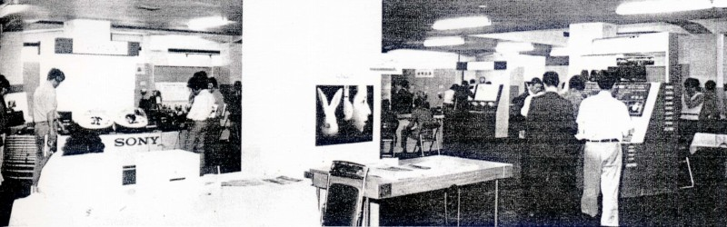
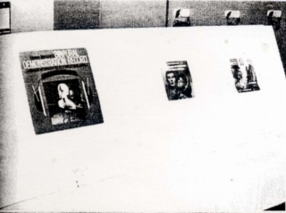 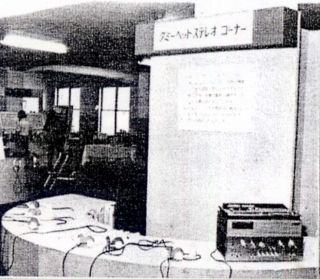
（当時はヘッドフォンの頭内定位が問題とされていたので、バイノーラルレコードやダミーヘッドのコーナーが設けられていた）
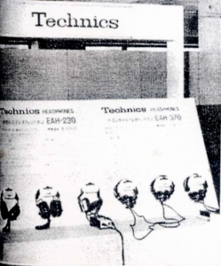 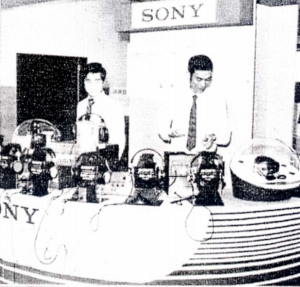 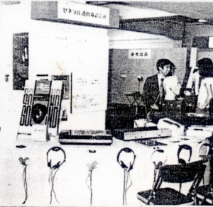
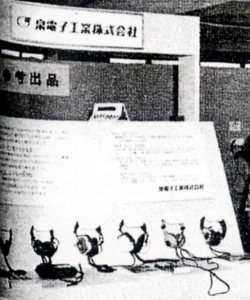 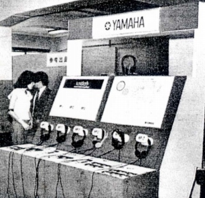 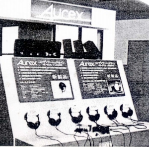
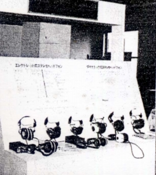 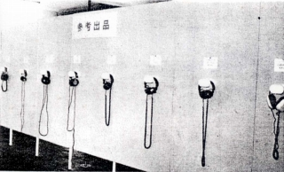
（企業参加のブース 三段目はアルファ電子、企業参加以外のメーカーの機種も展示されていた）
�A第２回
第2回については1976年の6/21〜6/23の３日間に開催されました。場所は前回と同様に「東京都立産業会館」となっています。参加企業数は16社。岡原勝氏をはじめとした複数の講師による講演も連日行われたそうです。
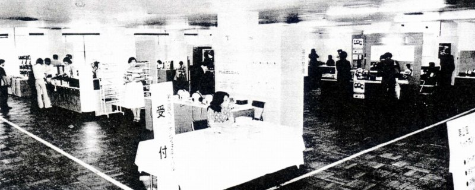
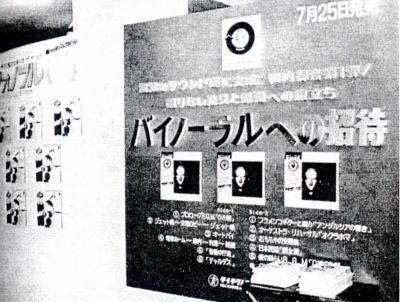
（前年と同様にバイノーラルレコードやダミーヘッドのコーナーが設けられていた）
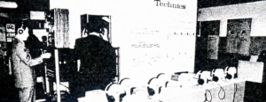 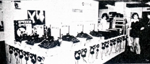 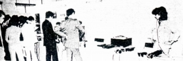
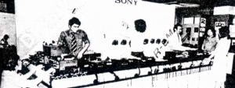 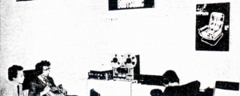
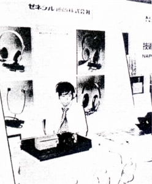 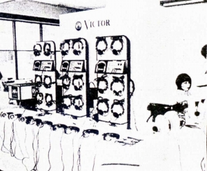
（企業参加のブース わかりにくいが上段中央はヤマハ、上段右はパイオニア）
�B第３回
第3回については1977年の9/9〜9/11の３日間に開催されました。場所は「秋葉原ラジオ会館８階ホール」に変更されています。参加企業数は13社。ナポレックス、スタックス、レソーン、ソニー、オーレックス、コスなどコンデンサー型ヘッドフォンを持つメーカー等が集まったようです。来場者のアンケートではコスのESP/10とスタックスのSR-X/MK-3が人気を集めたそうです。
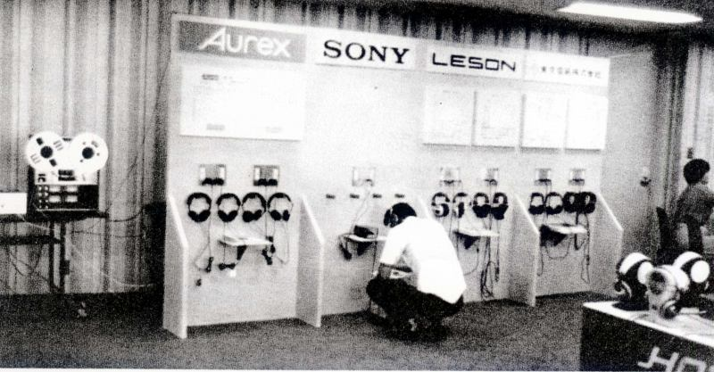
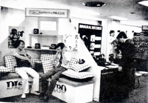 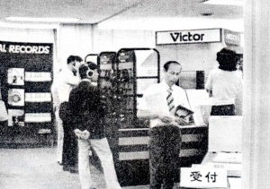 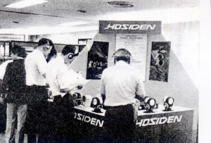
この「ヘッドフォン・フェスティバル」は現在の「ヘッドフォン祭り」と違う点が３つあります。
一つは耳にしたことがないようなメーカーが参加していること。管理人も知らないメーカーがあります。「泉電子工業」(*)や「東京電気」といったメーカーはこの記事で初めて知りました。あまり一般には知られていない「アルファ電子」や「レソーン」から推察すると、大メーカーの下で実際の開発や製造受託をやっているメーカー、または海外輸出中心のメーカーでしょうか？現在の話に置き換えると、DENNONではなく、またフォステックスとしてでもなくフォスター電機自身が出てくるようなものでしょうか。これは岡原氏が戦後各種の測定機の開発を依頼され、設計・試作までを自身で行い、製造担当の企業を探し、製品化してきた来歴に原因があるような気がします。
もう一つは一貫としてバイノーラルが主要なテーマとされていたこと。これは主催の岡原氏が長年（その発端はAMラジオのステレオ放送までさかのぼるそうです）バーノーラルの研究をしてきたことに起因します。岡原氏はバイノーラルの研究の過程でヘッドフォンそのものについても研究するようになったと別の記事で仰ってました。また当時は他の方やメーカーも頭内定位の解消に取り組んでいました。
最後は複数日開催であること。初回の1975年についてはわかりませんが（*）、第２回、第３回については３日間の開催でした。現在の「ヘッドフォン祭り」は１日のイベントで、そこにヘッドフォン愛好家の方が一斉に集まるのは、お祭りとしては楽しいのですが、他の用事と重なって参加できない方もいらっしゃいます。また3日あれば、地方からいらっしゃる方も他の予定と組合せ易いのではないでしょうか？貴重な誌聴の機会と考えれば１日のみの開催ではもったいないと感じますし、新型機など人気が集中する機種についてももう少し落ち着いて誌聴できるようになるかと思います。
「ヘッドフォン・フェスティバル」の第４回は開催直前まで準備が進んでいたそうですが、オーディオ協会の幹部の死亡により延期となり、その後は開催されなかったそうです。
このイベントが日本初のヘッドホンのためのオーディオショウどうかは浅学な管理人にはわかりませんが、現在の「ヘッドフォン祭り」の前身である第１回の「ハイエンドヘッドフォンショー」を開催する際に、中野の某ショプが「おそらく日本初？の試みとして（中略）ハイクラスヘッドホンばかりを集めた試聴展示会」と慎重な表現を用いたことに敬意を表します。
（*）第1回の開催日程、第1回と第2回の開催場所、及び泉電子工業については、この原稿作成後の資料収集で判明したことがあるので、2010年7月4日に「続・日本初？」というタイトルでまとめました。また泉電子工業について最近新たに判明したことがあるので、IZUMI（イズミ）というブランドのページを2011年5月1日に追加しました。